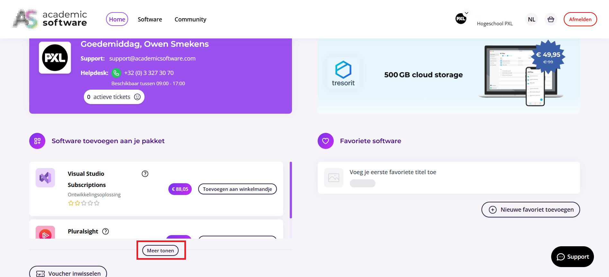
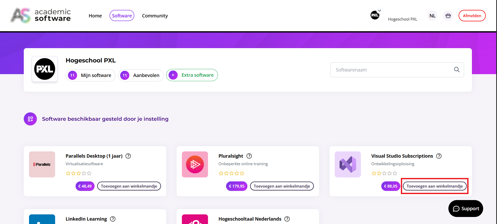

Microsoft Visual Studio Pro (variant met persoonlijk Outlook-account)
Om aan alle lessen, labo's en evaluaties te kunnen deelnemen, heb je een Visual Studio Pro-licentie nodig. Die licentie is verplicht voor dit vak en koop je individueel aan via Academic Software.
1. De licentie aankopen via Academic Software
1.1. Website
- Ga naar academicsoftware.eu/login
- Geef je PXL-e-mailadres in (formaat xxxxxx@student.pxl.be)
- Ga vervolgens door met het aanmelden op je PXL-e-mailaccount.

1.2. Academic Software-portaal
- Je bent nu op het Academic Software-portaal. Klik op de startpagina op "Alle tonen".

1.3. Winkelmandje voor Visual Studio Pro
- Klik op "Toevoegen aan winkelmandje" bij het product "Visual Studio Subscriptions".

Doorloop de overige stappen om de aankoop van Visual Studio Pro af te ronden.
2. Licentie voor Visual Studio Pro aanvragen
2.1. Academic Software
- Ga naar https://www.academicsoftware.eu/
- Meld je indien nodig opnieuw aan met je studenten-e-mailadres.
2.2. Software
- Klik na het aanmelden bovenaan in het menu op “Software”.
- Scroll naar beneden naar de tegel “Visual Studio Pro” en klik erop.
2.3. Licentie aanvragen
- Klik op de volgende pagina onderaan op de knop “Licentie verkrijgen”.
3. Persoonlijk Outlook-/Hotmail-e-mailadres
Om de Microsoft 365-tenant aan te vragen via je Visual Studio Professional-licentie, moet je een persoonlijk Outlook-/Hotmail-e-mailadres doorgeven aan Academic Software.
- Heb je al een persoonlijk Outlook-/Hotmail-account? Ga dan verder naar stap 4: Persoonlijk Outlook-/Hotmail-e-mailadres doorgeven.
- Heb je nog geen persoonlijk Outlook-/Hotmail-account? Volg dan eerst de stappen in de volgende handleiding om er een aan te maken: Handleiding: Een persoonlijk Outlook-/Hotmail-e-mailadres aanmaken.
4. Persoonlijk Outlook-/Hotmail-e-mailadres doorgeven
Geef je persoonlijke Outlook-/Hotmail-e-mailadres door aan Academic Software, zodat je Visual Studio Professional-licentie correct gekoppeld kan worden aan de Microsoft 365-tenant.
Stuur hiervoor een e-mail vanaf je PXL-e-mailadres naar support@academicsoftware.com. Gebruik hiervoor onderstaande e-mail en vul je persoonlijke Outlook-/Hotmail-e-mailadres en je naam in.
Onderwerp: Persoonlijk Outlook-/Hotmail-e-mailadres voor Visual Studio Professional
Beste,
Ik heb onlangs de Visual Studio Professional-licentie aangekocht via jullie platform. Om deze licentie correct te koppelen aan de Microsoft 365-tenant, geef ik hierbij mijn persoonlijke Outlook-/Hotmail-e-mailadres door.
Mijn persoonlijke Outlook-/Hotmail-e-mailadres is: <hier invullen>
Met vriendelijke groeten,
Voornaam Naam